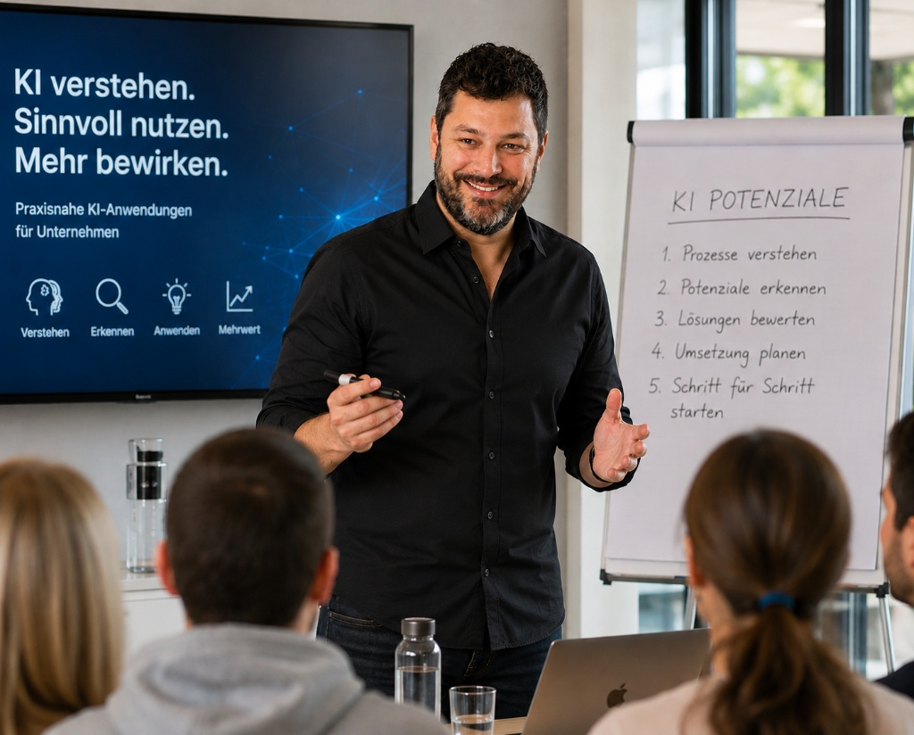

Wo KI wirklich Sinn macht
Konkrete Stellen in Ihrem Unternehmen, wo KI Entlastung, Klarheit oder Effizienz bringt.
Der Mensch vor der Technologie.
In 90 Minuten identifizieren wir gemeinsam die 5 bis 10 wirkungsvollsten KI-Anwendungen für Ihr Unternehmen – konkret, ehrlich und ohne Buzzwords.
Ich bin Nando – Unternehmer, Beobachter und jemand, der KI nicht als Wundermittel verkauft, sondern als Werkzeug, das dann wirkt, wenn Menschen es richtig einsetzen.
Mein Antrieb: die Lücke schliessen zwischen dem, was KI verspricht, und dem, was Schweizer KMU tatsächlich brauchen. Das geht nur durch Zuhören, Experimentieren und konsequente Ehrlichkeit – nicht durch Hype.
«KI ist keine Frage der Grösse. Es ist eine Frage des richtigen Einstiegs.»
In 90 Minuten identifizieren wir gemeinsam die 5 bis 10 wirkungsvollsten KI-Anwendungsfälle für Ihr Unternehmen. Konkret, verständlich und direkt umsetzbar.
90-minütige KI-Potenzialanalyse
für Ihr Schweizer KMU
Sicher bezahlen via Stripe. Termin wählst du direkt nach der Buchung.
Wir sprechen zuerst über Ihre Prozesse, Engpässe und Ziele – erst danach über Technologie. Am Schluss haben Sie einen priorisierten Fahrplan, den Sie sofort nutzen können.
Sie schreiben mir, was Sie beschäftigt. Kein aufwändiges Formular. Ich melde mich persönlich innerhalb von 24 Stunden.
Wir sprechen über Prozesse, Engpässe und Ziele. Noch kein Wort über KI-Tools – erst, wenn wir den Kontext kennen.
Gemeinsam suchen wir die Stellen, wo KI echten Nutzen schafft – realistisch, ehrlich, ohne Spielereien.
Sie erhalten einen priorisierten Fahrplan: Was jetzt umsetzen, was später angehen, was vorerst weglassen.
Konkrete Stellen in Ihrem Unternehmen, wo KI Entlastung, Klarheit oder Effizienz bringt.
Repetitive Prozesse, die Zeit kosten und bei denen KI sofort helfen kann.
Eine klare Priorisierung nach Aufwand und Wirkung – damit Sie mit dem Richtigen beginnen.
Ehrliche Einschätzung, was nicht passt oder noch zu früh wäre. Keine Spielereien, keine Luftschlösser.
Ein konkreter Fahrplan, den Sie selbst oder mit Unterstützung umsetzen können.
Praxisnahe Empfehlungen zu Werkzeugen und Methoden, die zu Ihrem Betrieb passen.
Bereit für Klarheit statt Hype?
KI-Potenzialanalyse anfragen25 Jahre digitale Praxis, 20 Jahre B2B Vertrieb und Business Development, Erfahrung in Webentwicklung, Hosting, Social Media und Bildung – und seit Jahren tägliche Arbeit mit KI-Werkzeugen in der Praxis.
Ich bin kein Akademiker, der KI erklärt. Ich bin jemand, der die Werkzeuge selbst in der Hand hatte, ausprobiert hat, gescheitert ist und weiterentwickelt hat – bevor ich sie weiterempfehle.

Neun echte LinkedIn-Empfehlungen von Menschen aus Beratung, Training, Vertrieb und Unternehmertum. Unterschiedliche Branchen, dieselbe Erfahrung.
Neben der KI-Potenzialanalyse begleite ich Unternehmen und Bildungsinstitutionen mit massgeschneiderten Formaten – immer mit dem Menschen im Mittelpunkt.
45–60 Minuten. Praxisnah und ohne Hype. Für Konferenzen, Führungsanlässe und Verbände.
Anfragen →Halbtag oder Ganztag, hands-on. Für Teams, die KI wirklich verstehen und anwenden wollen.
Anfragen →Strategische Begleitung 1:1 für Unternehmerinnen und Unternehmer, die einen direkten Denkpartner suchen.
Anfragen →KI-Literacy Programme für Schulen, Hochschulen und Weiterbildungsanbieter. Massgeschneidert.
Anfragen →Keine Tutorials. Keine Hype-Artikel. Nur ehrliche Beobachtungen aus der Praxis.
Wer keine Bedenken hat, hat sich noch nicht wirklich damit auseinandergesetzt. Skepsis ist der Anfang von echter Auseinandersetzung.
Beobachtung lesenWas es bedeutet, wenn Inhalte professionell klingen, aber niemand dahintersteht – und was das für Führung und Vertrauen heisst.
Beobachtung lesenNicht die spektakulären Tools haben mich am meisten überrascht. Sondern die kleinen, stillen Veränderungen im Alltag.
Beobachtung lesenSchreiben Sie mir – ob KI-Potenzialanalyse, Workshop oder eine konkrete Frage. Ich antworte persönlich. Keine automatischen Antworten, kein Sales-Funnel.